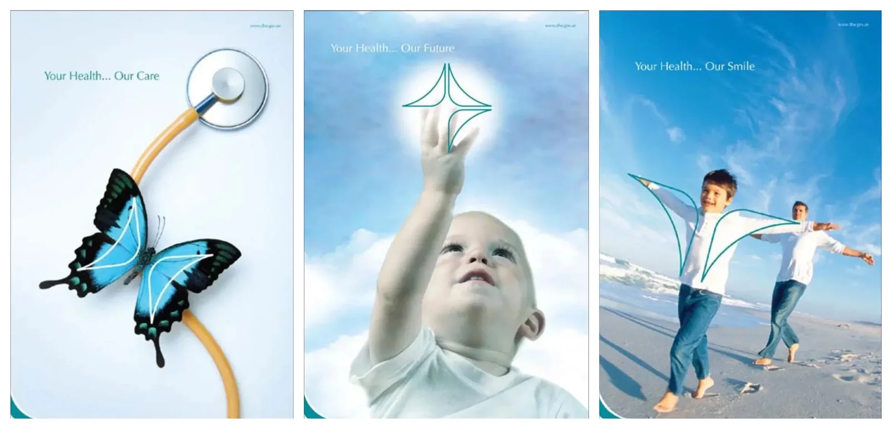
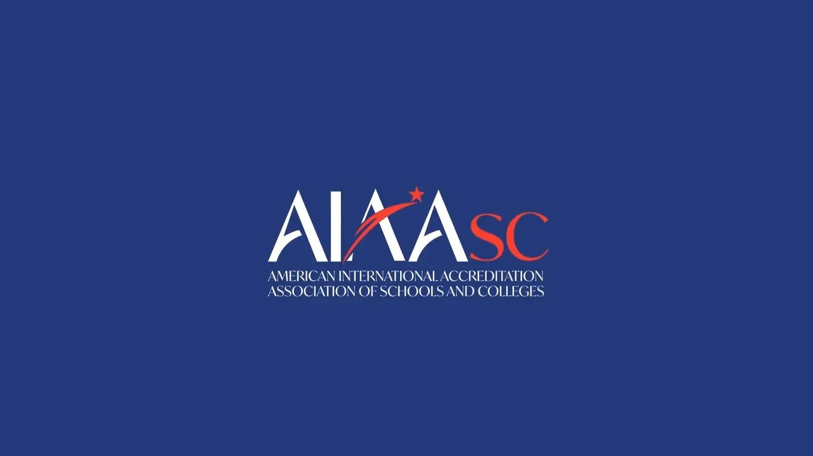
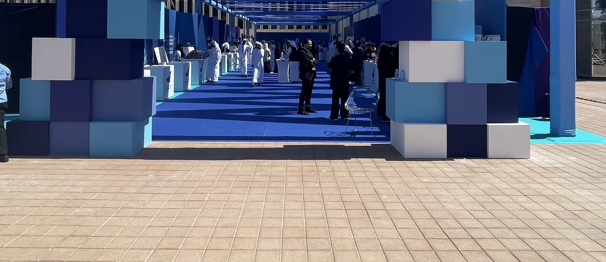

01
Dubai Health Authority
A shape with something to say.
Identity, guidelines and launch campaign
Dubai · 2008
US$2.3M launch campaign · almost 1,000 staff voted for the mark
Open the project →Projects
Twelve projects, strongest first. Each opens with a film where one exists, then the idea, the designs, the build and the result.

01
Dubai Health Authority
Identity, guidelines and launch campaign
Dubai · 2008
US$2.3M launch campaign · almost 1,000 staff voted for the mark
Open the project →
02
ZEISS Vision Care
Idea, launch environment and materials · with Mission Control X
Dubai · 2022
Live six days after confirmation
Open the project →
03
Liwa International Festival
Campaign, TVC and six zones built on open sand
Al Dhafra · 2019–20
Six zones from scratch · 16 days · US$1.04M contract
Open the project →
04
AIAASC
Repositioning, identity and three films
A New York client, led from Dubai · 2020–22
Identity, toolkit and three films, then a seven-month retainer
Open the project →
05
Why Not! Mazzika
Campaign and visual system · with Mission Control X
Coca-Cola Arena, Dubai · 2019
Six acts on one night
Open the project →
06
National Bullying Prevention Week
Campaign brand, social content and the walk
UAE Ministry of Education · seven emirates · 2018
40M hashtag views in two days
Open the project →
07
Al Forsan International Sports Resort
Identity, brand architecture and launch campaign
Abu Dhabi · 2009
One gate, every sport
Open the project →
08
Cityscape Abu Dhabi
Pavilion for the Department of Municipal Affairs
Abu Dhabi · 2017
7,200 sq ft · 14 projects · built in three days
Open the project →
09
The Big Grill
Festival poster, system and stage · with Mission Control X
Abu Dhabi · 2018
Drawn first, then built on the lawn
Open the project →
10
Innovation Month, Al Ain
Campaign mark and the gate
Al Ain City Municipality · 2024
40 projects · the gate opened 21 February
Open the project →
11
Majid Al Futtaim Global Solutions
Artwork and screen content for a first anniversary · with Mission Control X
Marriott Mena House, Giza · 2021
One year, written in words, under the Great Pyramid
Open the project →
12
Capacity Middle East
Gala dinner artwork and screens · with Mission Control X
Dubai · 2018, 2019
The client came back a year later
Open the project →